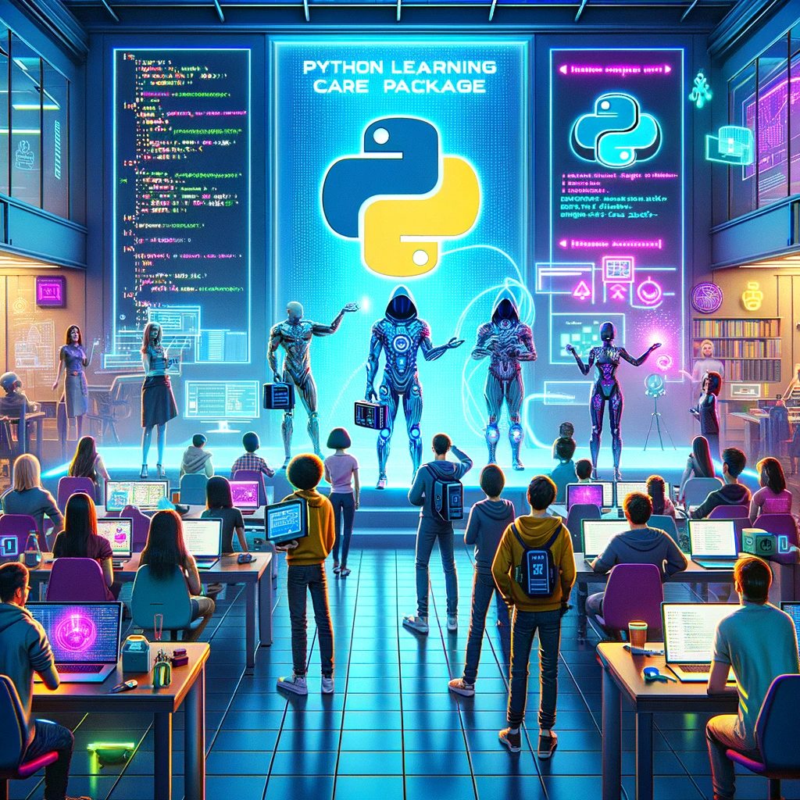

The Learning Python Care Package

Image created by DALL-E, OpenAI's image generation model.
Over the past year, I've been approached by numerous individuals seeking recommendations for good Python learning resources. So I've decided to compile a somewhat comprehensive list in form of this article. Making it easier for me to share, by simply directing people here. If you've send here by me, I hope these resources meet your needs. If not, please let me know!
Book(s)
Fluent Python
Once you've moved past the very basics (syntax, etc.), this book stands out as the best, in my opinion. Recently, the second edition of this book was published. Despite owning a hard copy, I haven't had the time to read it yet. A short disclaimer: while the first edition is quite substantial, it's still a manageable size for reading as a physical book. However, the same can't be said for the second edition; it's quite hefty, making it more suitable for electronic reading.
(Best Python book in my humble opinion)
Pytest-Book
In my view, pytest is the go-to unit testing framework/library for Python. While I generally advocate for minimizing dependencies, especially when the Python standard library offers robust solutions, it's hard to argue against pytest. Once you grasp its potential and advantages, it is impossible to not go for it.
This book is an excellent resource for testing, particularly with pytest. I highly recommend it for anyone looking to delve deeper into testing and harnessing the power of pytest.
Online Courses
Talk Python to Me Courses
These courses are nicely crafted with love and passion, suitable for beginners to intermediate learners (depending on the topic).
The ownership (lifetime access model) is highly appreciated in this world of subscription #%^*@-#.
A nice side effect is also that it supports Talk Python To Me and Co.
Beginners should definitely explore the courses offered here.
Pluralsight Courses by Austin Bingham and Robert Smallshire
Both authors offer great courses packed with valuable information and are well-crafted. For those inclined towards reading, they have three books catering to different experience levels, covering similar ground:
While I haven't read these books personally, judging from their video courses, they are likely to be of high standard.
Side Note (for Intermediate learners): You may find it beneficial to watch the videos at 1.2 - 1.4x speed, pausing or slowing down at the more "interesting" sections.
Programming Puzzles and Exercises
While preferences for programming puzzles and exercises vary greatly among individuals (personally, I lean towards creating small CLI applications for various purposes), I've also done some puzzles here and there. Below, you'll find a fairly standard list of Python puzzles and exercises that might be interesting to some of you.
Idioms
Inspired by this gist I started collecting python idioms here.
Podcasts
Python Bytes
Python headlines dilivered directly to your earbuds
Python Bytes is an entertaining weekly podcast of roughly 30 minutes. It's fantastic for getting quick updates and discovering new ideas (such as blog posts, new libraries, and frameworks) within the Python space.
Although it's a podcast, the episodes are also live-streamed, allowing listeners to engage in a live chat during the show.
Talk Python To Me
A podcast on Python and related technologies
While the above description is accurate, it understates the true value of this podcast.
My personal TL;DR would be:
An excellent ~60-minute podcast covering various detailed Python-related topics.
While not every episode might align with one's specific interests, they are consistently enjoyable to listen to.
Alongside Python Bytes, this podcast offers an ideal way for staying updated on on Python and its community.
Talks
Stop Writing Classes by Jack Diederich
TL;DR: Old but Gold!!
Transforming Code into Beautiful, Idiomatic Python by Raymond Hettinger
TL;DR: Must watch talk on how to improve your python code.
Refactoring Python: Why and how to restructure your code by Brett Slatkin
TL;DR: Must watch talk on how to go about refacotring in python.
Modern Dictionaries by Raymond Hettinger
TL;DR: An interesting and insightful deep dive into dictionaries.